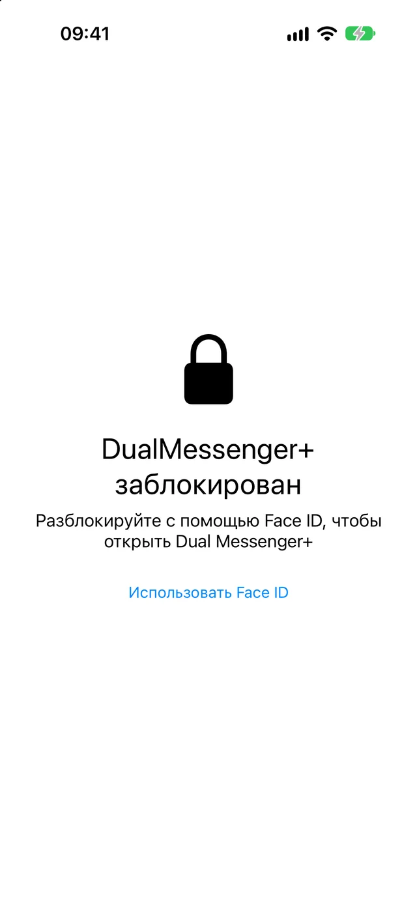
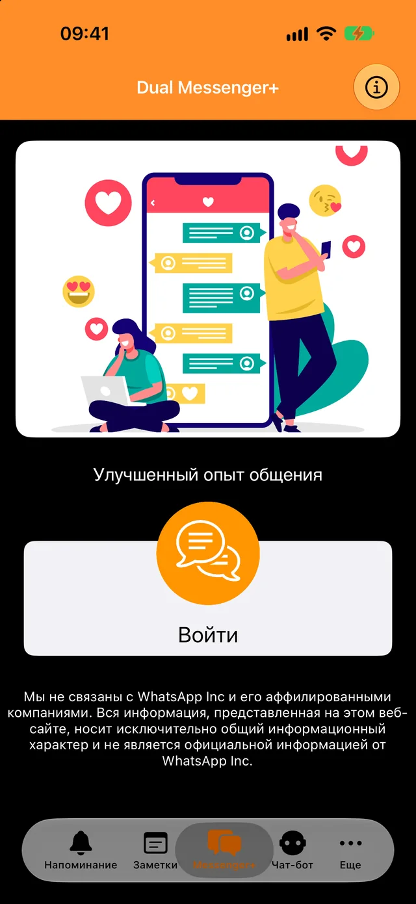
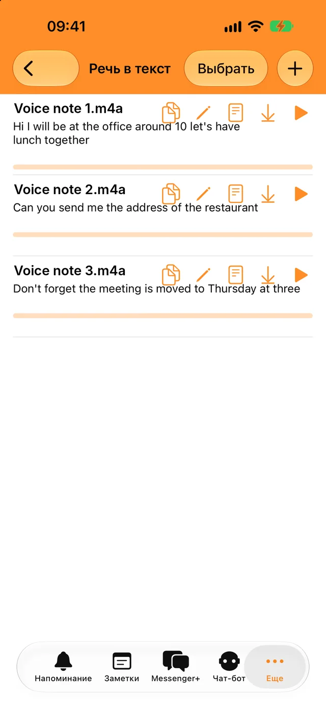
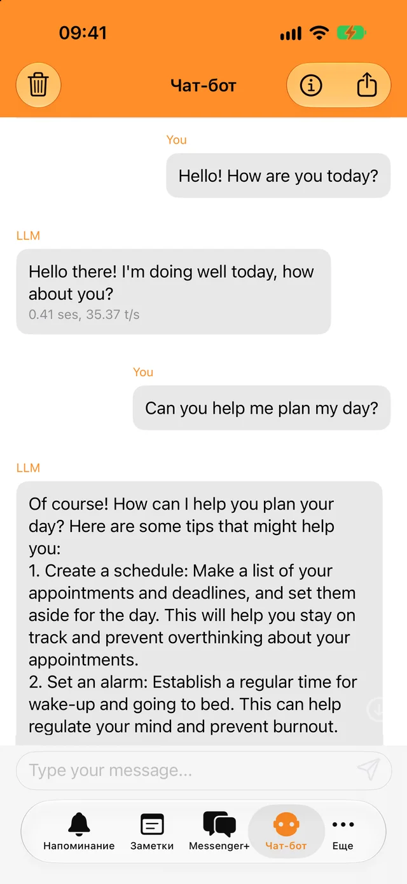
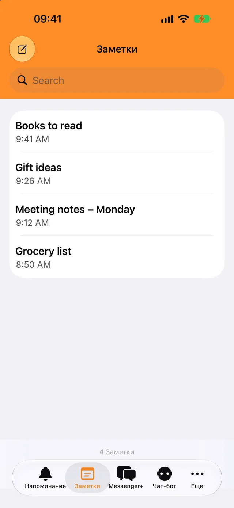

Блокировка по Face ID или коду-паролю
Открыть приложение и ваши чаты можете только вы. Выберите, когда оно блокируется: сразу или через несколько минут.
Добавьте второй аккаунт за несколько секунд и разделите рабочие и личные чаты.
Бесплатная загрузка. Для iPhone, iPad и iPhone Duo.

Блокировка для ваших чатов и несколько инструментов на каждый день в том же приложении.

Открыть приложение и ваши чаты можете только вы. Выберите, когда оно блокируется: сразу или через несколько минут.

Расшифровывайте голосовые сообщения и аудиофайлы на своём языке и копируйте текст куда угодно.

Задавайте быстрые вопросы даже без интернета. Ваши разговоры с ботом не покидают телефон.

Записывайте всё важное, находите записи через поиск и получайте уведомление, когда наступает время напоминания.
Телефон со вторым аккаунтом WhatsApp понадобится всего на минуту.
Нажмите «Войти». На экране появится QR-код.
Перейдите в «Настройки», затем в «Связанные устройства» и нажмите «Привязка устройства».
Наведите этот телефон на QR-код. Ваши чаты откроются в Dual Messenger+.
WhatsApp сохраняет вход на связанном устройстве, пока вы пользуетесь WhatsApp на телефоне хотя бы раз в 14 дней.
У Dual Messenger+ нет серверов, которые видят ваши сообщения. Создавать аккаунт не нужно, а в приложении нет ни рекламы, ни трекеров.
Заметки, напоминания, записи и разговоры с ботом сохраняются на вашем iPhone или iPad.
Вы не сообщаете нам ни имя, ни адрес электронной почты, ни номер телефона.
Face ID и Touch ID обрабатывает само устройство. Приложение никогда не получает биометрические данные.